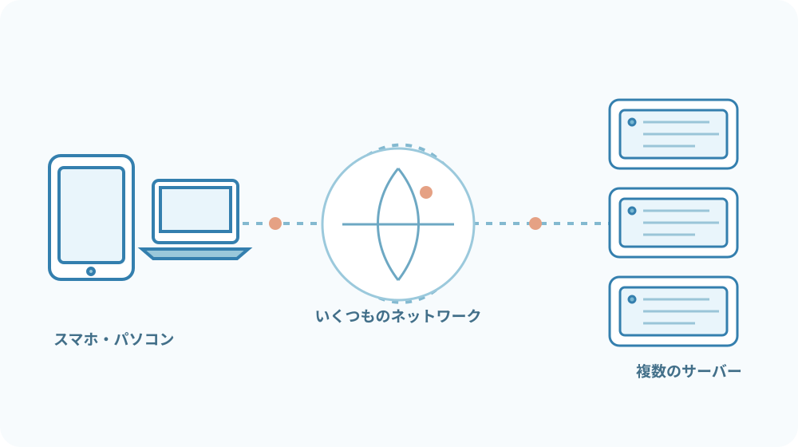

朝、スマホで天気予報を見る。Googleでお店を探す。YouTubeの動画や友人の投稿を見たり、ネットショップで買い物をしたり。
どれも、画面をタップすれば情報が届きます。でも、その情報はどこから来るのでしょう？なぜ遠くにある情報を、自分のスマホで見られるのでしょうか。そもそも、インターネットは何のためにあるのでしょう？
01 — INTERNET, IN DAILY LIFE
インターネットは、情報を届け合うためのつながり
インターネットとは、世界中のコンピューターやスマートフォンなどをつなぎ、情報を送り合えるようにした巨大なネットワークです。ネットワークは、機器どうしが情報をやり取りするためのつながりのことです。
たとえば天気予報を見るとき、スマホは天気情報を持つサービスに「今日の天気を見せて」と情報を求めます。離れた場所にあるコンピューターがその情報を返し、スマホが受け取って画面に表示します。インターネットは、このように離れた機器どうしが情報を交換するのを助けます。

道路網にたとえると、情報は車、ネットワークは道路、情報を届けたい機器は目的地のようなものです。ただしこれはイメージを助ける例えです。実際の通信では、データを小さな単位に分けたり、通信上の決まりに従って宛先へ届けたりします。世界に一台の「インターネット本体」があるのではなく、多数のネットワークが相互につながっています。
02 — TAP, REQUEST, RESPONSE
リンクをタップした一瞬、裏側では？
今、目の前のスマホでWebサイトのリンクをタップしたとします。画面にはすぐWebサイトが表示されます。でも、その一瞬の間に、裏側ではいくつもの仕組みが動いています。
まず、スマホ上で動くSafariやChromeなどのブラウザが、ページを取りに行きます。以下は役割をつかむための簡略図です。実際には暗号化通信、キャッシュ、複数のサーバーとの通信など、ここにない処理も行われます。

- STEP 1スマホでリンクをタップ
見たいページのリンクを選びます。リンク先のURLが、ブラウザに渡されます。
- STEP 2ブラウザがページを取りに行く
SafariやChromeなどがURLを読み取り、ページを取得する準備をします。
- STEP 3DNSがドメイン名を調べる
DNSという仕組みが、URLに含まれるドメイン名に対応するIPアドレスを調べます。電話帳のような役割ですが、実際の仕組みは電話帳そのものではありません。
- STEP 4IPアドレスを手がかりに接続する
IPアドレスは通信相手を識別する番号です。スマホはWi-Fiルーターなどを通じてネットワークにつながり、そのIPアドレスを手がかりに宛先のサーバーとの通信を始めます。
- STEP 5HTTPリクエストを送る
ブラウザがサーバーに「このページをください」と要求します。リクエストは、相手に送るお願いです。
- STEP 6HTTPレスポンスが返る
サーバーが要求を受け取り、結果を返します。レスポンスは、リクエストへの返事です。
- STEP 7ページの材料が届く
HTML（文章や構造）、CSS（色や配置）、画像などのデータが届きます。ページによって、追加のデータを別途取得することもあります。
- STEP 8ブラウザが画面に表示する
ブラウザが届いた材料を読み取り、文字や画像、レイアウトを組み立ててWebページとして表示します。
03 — THE WORDS IN THE DIAGRAM
図に出てきた言葉を、流れに沿って見てみよう
用語は別々に暗記しなくて大丈夫です。リンク先を特定し、相手を見つけ、お願いを送り、返事を画面にする。それぞれの言葉がどこで役立つかを見ていきます。
- ブラウザ
- 何：Webページを見るアプリです。なぜ・役割：URLからページを取得し、届いた材料を画面に表示します。今回：STEP 2で取得を始め、STEP 8で表示します。
- URL
- 何：Web上のページなどの場所を表す文字列です。なぜ・役割：どの情報を見たいかをブラウザに伝えます。今回：STEP 1でタップしたリンク先です。
例：https://example.com/news/はURL全体です。 - ドメイン
- 何：URLの中で、接続先のWebサイトを名前で指定する部分です。なぜ・役割：数字のIPアドレスを直接覚えずに行き先を指定できます。今回：STEP 3でDNSが調べる名前です。
例：https://example.com/news/のexample.comがドメインです。/news/はページの場所を示す部分です。 - DNS
- 何：ドメイン名に対応するIPアドレスを調べる仕組みです。なぜ・役割：名前で指定した相手を通信先として探す手がかりを得ます。今回：STEP 3で登場します。結果が端末やネットワークに一時保存され、毎回問い合わせない場合もあります。
- IPアドレス
- 何：ネットワーク上の通信相手を識別するために使う番号です。なぜ・役割：データの届け先を判断する手がかりになります。接続先やネットワークの設定が変わると、同じ機器でも番号が変わることがあります。今回：STEP 3でDNSが調べ、STEP 4で接続先を見つける手がかりにします。
- インターネット
- 何：相互につながった多数のネットワークです。なぜ・役割：離れた機器どうしがデータをやり取りできるようにします。今回：STEP 4〜7で、ルーターやサーバーの間をデータが進む道筋になります。
- サーバー
- 何：情報や機能を提供するコンピューターやソフトウェアです。なぜ・役割：届いた要求に応じてページのデータなどを返します。今回：STEP 5で要求を受け、STEP 6で応答します。
- HTTP
- 何：Webで要求と応答をやり取りするための通信規約（約束事）です。なぜ・役割：ブラウザとサーバーが意味のそろった形で情報交換できます。今回：STEP 5・6で使われます。HTTPSではHTTPの通信をTLSで保護します。
- リクエスト
- 何：ブラウザなどがサーバーへ送る要求です。なぜ・役割：欲しいページや実行したい操作を相手に伝えます。今回：STEP 5でサーバーへ向かう矢印です。
- レスポンス
- 何：サーバーがリクエストに対して返す応答です。なぜ・役割：処理結果やページの材料をブラウザに届けます。今回：STEP 6・7でスマホへ戻る矢印です。
- HTML
- 何：文章や見出しなど、ページの内容と構造を表す言語です。なぜ・役割：ブラウザがページの骨組みを理解します。今回：STEP 7で届き、STEP 8で読み取られます。
- CSS
- 何：文字の色や大きさ、配置など見た目を指定する言語です。なぜ・役割：HTMLで作った構造の見た目を整えます。今回：STEP 7で届き、STEP 8でブラウザが反映します。
この説明はWebページを開く代表的な流れを単純化しています。実際の通信には、HTTPSの暗号化、キャッシュ、リダイレクト、複数ファイルの取得なども関わります。
04 — IT MAKES SENSE WHEN YOU SEE IT
複雑に見えるけど、図にすると意外と分かる。
インターネットの仕組みは、最初に聞くと難しく感じますよね。サーバー、DNS、IPアドレス……聞き慣れない言葉が続くと、「自分には分からないかも」と思うのも自然なことです。
でも、一つずつ役割を分けて図で見ると、どの機器が何をしているのか、少しずつつながってきます。普段何気なく使っているスマホにも、たくさんの仕組みが関係しています。
難しいことを、目で見て分かりやすくする。それがDIGIT.の案内です。仕組みを知ると、いつものインターネットが少し違って見えてきます。
05 — THREE THINGS TO REMEMBER
今日覚えておきたい3つのこと
- 01
インターネットは、離れた機器どうしが情報を送り合うためにつながったネットワーク。
- 02
Webページを開くときは、DNSやIPアドレスを手がかりに相手を見つけ、リクエストとレスポンスで情報をやり取りする。
- 03
届いたHTML・CSS・画像をブラウザが読み取り、私たちが見る画面に組み立てる。
関連する参考資料
Webページが届く流れについての資料です（閲覧日：2026年11月18日）。